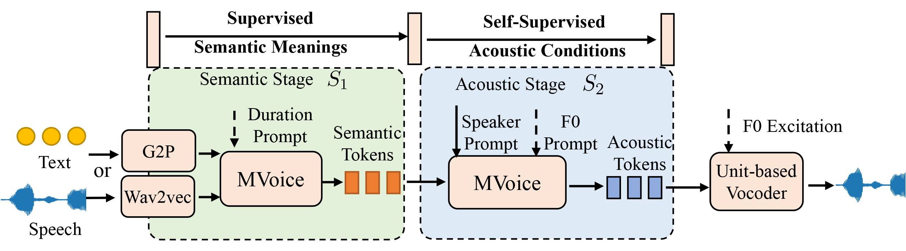

Anonymous Authors
Abstract. Various applications of voice synthesis have been developed independently despite the fact that they generate “voice” as output in common. In addition, the majority of voice synthesis models currently rely on annotated data, but it is crucial to scale them to self-supervised datasets in order to effectively capture the wide range of acoustic variations presented in human voice, including speaker identity, emotion, and prosody. In this work, we propose MVoice, a multimodal spoken large language model for synthesizing and manipulating voice signals at scale. MVoice employs self-supervised voice tokens with the ``coarse-to-fine'' designs to first determine semantic meaning and then introduce condition signals for acoustic generation. It offers notable benefits with unified generation and transformation capabilities: 1) model and data scalability: without the requirement of scattered model-specific methodologies or annotations acoustic data, training could be scaled up in terms of data usage and model capability; and 2) controllability and conditioning flexibility: we investigate different conditioning mechanisms and effectively handle voice synthesis applications, including text-to-speech, voice conversion, singing voice synthesis, singing voice conversion, and speech-to-speech translation by re-synthesizing the discrete representations with prompt guidance. Experimental results demonstrate that MVoice exhibits superior audio quality and style similarity compared with competitive baseline models in monolingual/cross-lingual voice generation.

MVoice is considered a unified voice synthesis model with a "coarse-to-fine" design that progressively enhances the modeling of voice signals by injecting desired conditioning information, which is organized in two main stages as illustrated in Figure 1: 1) semantic stage S1, speech or text inputs are transformed into a sequence of semantic tokens s, 2) acoustic stage S2, acoustic tokens a with a variety of conditions (speaker, emotion, prosody, and style) are generated autoregressively from the "pseudo" text (i.e., semantic tokens s). In the end, a unit-based vocoder synthesizes high-fidelity waveforms from compressed acoustic representations.
In this section, we provide the generated audio samples with other systems on the text-to-speech task.
| Text | GT | GenerSpeech | YourTTS | MVoice (ours) |
|---|---|---|---|---|
In this section, we provide the generated audio samples with other systems on the voice-conversion task.
| Source Audio | Prompt | NANSY | ppg-vc | MVoice (ours) |
|---|---|---|---|---|
In this section, we provide the generated audio samples with other systems on the singing-voice-synthesis task.
| Text | Ground-truth | FFT-Singer | DiffSinger | MVoice (ours) |
|---|---|---|---|---|
In this section, we provide the generated audio samples with other systems on the singing-voice-conversion task.
| Ground-truth | Prompt | MVoice (ours) |
|---|---|---|
In this section, we provide the generated audio samples with other systems on the crosslingual text-to-speech task.
| Text | Prompt Language | Prompt | Voicebox | YourTTS | MVoice (ours) |
|---|---|---|---|---|---|
| French | |||||
| Spanish | |||||
| German |
| Text | Prompt Language | Prompt | Voicebox | YourTTS | MVoice (ours) |
|---|---|---|---|---|---|
| English | |||||
| French | |||||
| Spanish |
| Text | Prompt Language | Prompt | YourTTS | MVoice (ours) |
|---|---|---|---|---|
| German | ||||
| English | ||||
| Spanish | ||||
| French |
In this section, we compare our results with demo samples of VALL-E.
| Text | Prompt | VALL-E | MVoice (ours) |
|---|---|---|---|
In this section, we compare our results with demo samples of SPEAR-TTS.
| Text | Prompt | SPEAR-TTS | MVoice (ours) |
|---|---|---|---|
In this section, we compare our results with demo samples of VoiceBox.
| Text | Prompt | VoiceBox | MVoice (ours) |
|---|---|---|---|
In this section, we provide samples to show the cross-lingual style tranferring ability of our model.
| Source Audio | Prompt | MVoice |
|---|---|---|